2016 News

Fri 11 Nov 16 - Pudsey Practice Fund Raiser
On Friday 11th Nov we rang Pudsey Surprise Major for Pudsey Bear at Sutterton, and had a collection which raised £20 for the BBC Children in Need appeal. Afterwards a special cake was enjoyed along with the tea and coffee.
Val Wild and images
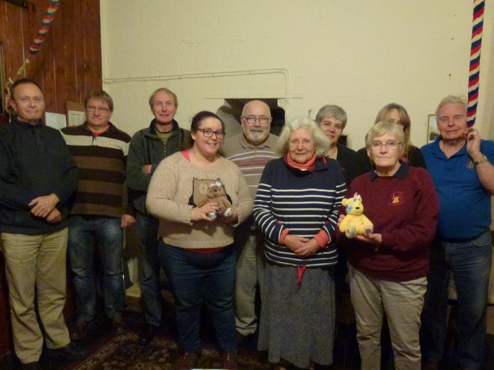
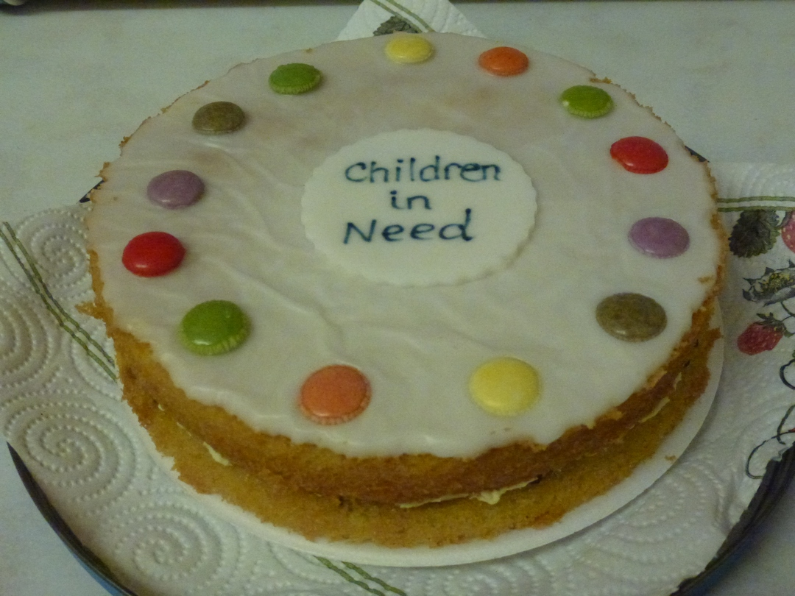
Val Wild and images
EB Practice Sat 5 Nov 16 Burgh-le-Marsh
Approximately 20 members of the Eastern Branch and Central Branch members attended a Practice meeting at Burgh-le-Marsh on Sat 5 Nov 16. The church of SS Peter and Paul has a good round of 8 bells and it was suggested that more practices should be held on them; James was up for this as there was IT coverage in the Tower!
Jo French was the ringing master and the ringing covered a wide range from rounds and call changes to Stedman Triples, Grandsire Triples, Plain Bob Major and Cambridge Major.
Thanks were given to John Turner for opening the Tower and Jo French. It was a very pleasant way to spend a winter Saturday morning, with even the sun managing to put in an appearance.
Tess Rowland
Sat 29 Oct 16, Race-Night Fund-Raising Event, Alford
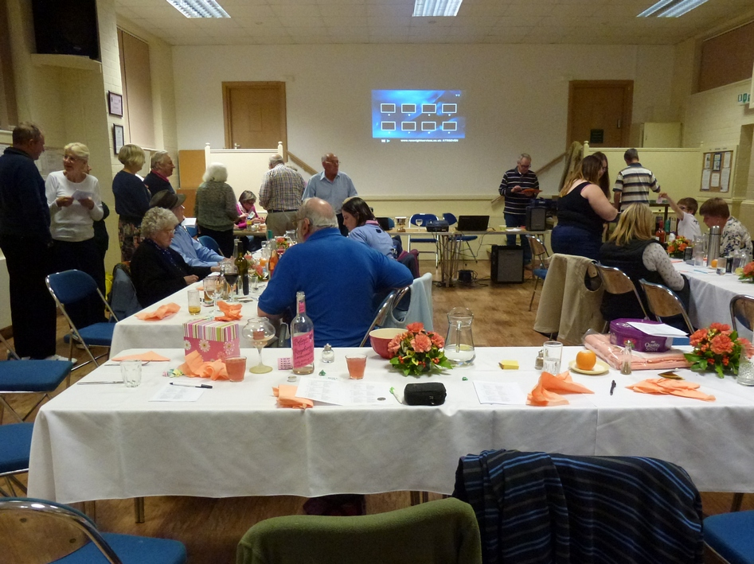
The Eastern Branch's fund-raising event in support of the Guild was held on the evening of October 29th at Alford Church Hall. Once again the event was a Race Night, the “Betty Collett Cup Meeting”, which is fast becoming something of an old favourite.
There was a full race card of nine races, each race having eight horses. All of the horses in the first eight races had been pre-sold to owners from throughout the Guild branch for the very modest sum of £2-50 each! Here's a list of all the winners and their owners:
- Inspire – Val Wild
- Chippy Nag – John Collett
- Swift Foot – Annie Swift
- Guernsey Lily – Mary Willoughby
- Bride-to-Be – Charlotte Davey
- Timberland Treble – Tess Rowland
- Marshman – Keith Falkner
- Wobbly William – Helen Brotherton
The Betty Collett Cup The last race of the night was the “Betty Collett Cup”. This was a competition between the winning horses from the previous eight races. The winner of this race was ‘Guernsey Lily’, owned by Mary Willoughby, who will be the proud holder of the Betty Collett Memorial Cup for the next 12 months, and who was also awarded a gift voucher kindly donated by John Collett. All Mary has to do now is wait for M&S to build their new store in Skegness (other gift vouchers are available)!
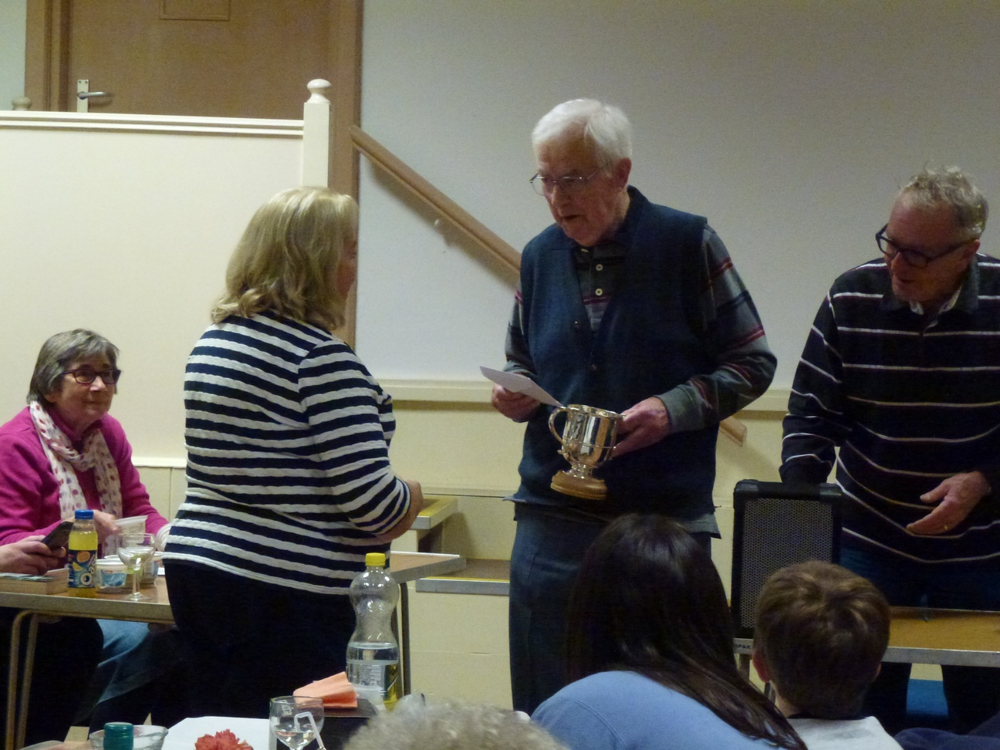
At the halfway point in the proceedings there was a welcome break for a supper of jacket potato with a choice of fillings, followed by apple strudel and custard produced by Caitlin Meyer ably assisted by Richard Willoughby and their team of helpers.
As always, the races were entertaining and exciting, made even more so by Phil Ford's occasional struggles to get the right video feed on screen! You can never relax around technology or it will bite your ankles. Just ask Gordon Brown! The raffle provided more fun and prizes, raising £61.00, and our thanks go to all who donated prizes.
Overall, including the raffle, we raised just short of £450.00 for the Guild, for which our thanks go to all who participated in any way in the evening. In closing, we must thank our race sponsor for the evening: David Reynolds Motor Mechanic, and also to all those who were kind enough to make an additional donation.
Phil Ford and images
Eastern Branch Outing to West Yorkshire
On Saturday 8 October 2016 we set off from a cold and wet Dickinson's bus depot stopping off at the Five bells in Butterwick before our journey to the first tower. There was 20 of us on the coach which was comfy and warm. Clare and I watched the apprentice episode from a previous day on the journey. As expected the journey was a little long but it was pleasant.... even though we did go the wrong way to start with missing the junction in Boston.
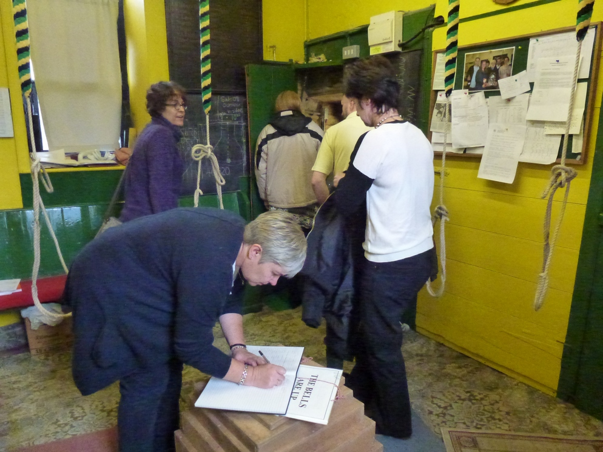
We arrived a little late to Brighouse a nice 8 near Halifax, we were met by 3 local ringers I used to ring with whilst at university. We went up to ring, at this tower Val ran the ringing, which varied from rounds and call changes to plain bob. Leaving the first tower we headed down the valley to Elland, these were a bit tricky due to them not being rung much, but a nicely weighted 8. Tony ran the ringing here which was more varied, from rounds and call changes, to stedman triples,
We then got back on the coach to head into Huddersfield for our lunch break. However we encountered a car accident but managed to squeeze through the gap and got to Huddersfield. We got dropped near the train station and we all went off for lunch. A few of us headed over to the closest Weatherspoon's, which was very busy due to the local rugby team having a match.
The long climb up to the ringing room met us in sunshine and we rang the 10 bells up with myself on the tenor and rang from rounds and call changes to plain hunt this was more of a challenge as we as a group don't ring a huge amount on 10. We then walked back to the bus. Driving up out of the town centre our bus driver gave us a little loop around the Lidl before getting the right exit to head up to Almondbury, this lovely 8 was the best tower of the day and lead to some really good ringing. It gave us an opportunity to ring more things from Cambridge surprise to some nice call changes.
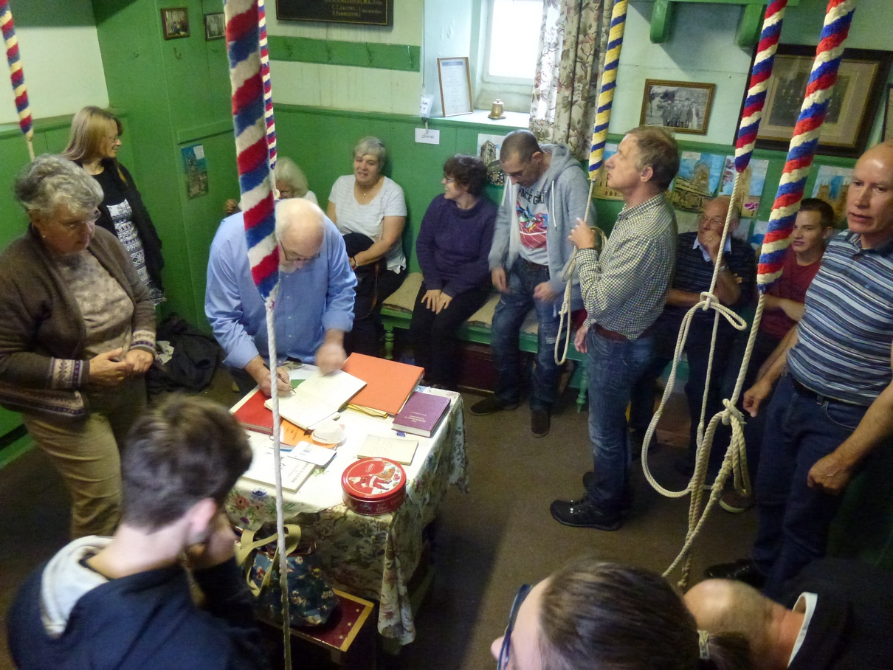
Following Alan in his car we headed past the iconic Castle Hill to the last tower of the day. Armitage Bridge is a light 6 where we headed up the stairs and rang up. Again these were an easy going set of bells, we had a good selection of ringing here, I think this was due to it being the only 6 of the day. We rang some lovely call changes, plain bob, and various surprise methods. Heading down stairs there was a flurry of using the facilities whilst a few of us had a final chat with Alan, discussing the Huddersfield ringers coming down to ring with us in 2017. We eventually all made our way back onto the bus and made our way back up to the M62.
We stopped off for our dinner stop at a service stop which had a coffee shop and Subway. Where some of us got off and got food. We had a leisurely half hour break before starting back on our journey back south. The journey south started off pleasantly until we noticed again we had "missed" a junction which took us back through Grimsby on the slow roads. Eventually we got back down to Butterwick dropping off the ringers who had joined us there before finally heading back to the depot.
I would like to thank those who came and hope the other ringers who attended had a good time. I found it a little stressful as it was the first outing I had arranged.
Gemma Evans – images Val Wild
Sat 1 Oct 16 - Lincoln Diocesan of Church Bell Ringers Striking Contest.
Saturday 1st October – Lincolnshire Day - and the Lincoln Guild 8 bell striking contest. This year it was held at Ingoldmells. Five teams competed – Eastern branch, West Lindsay, Southern branch and two teams from the Central branch. The Eastern branch, as hosts, rang first and the first challenge for the judges was an ambulance siren sounding during the test piece. Following this there was a storm with several loud claps of thunder. Despite these valiant efforts to join in, the judges still managed to hear the ringing. The tea, in the Church Hall, was provided by Helen and Isabel with Gemma helping in the kitchen serving some very welcome cups of tea, coffee and soft drinks.
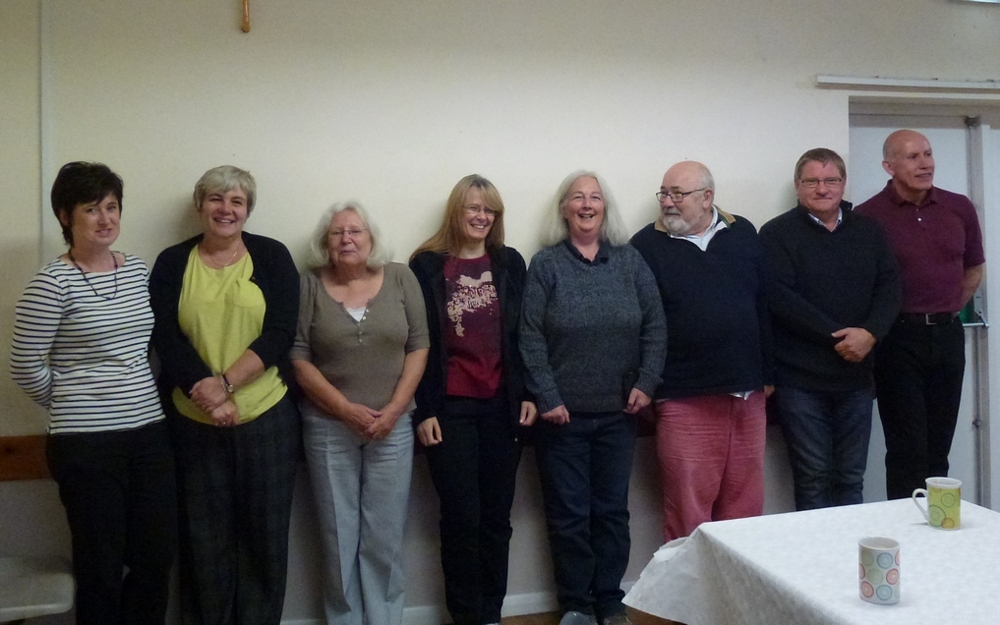
After tea the raffle, with several prizes, was drawn one person winning six times and another three times. Much to the frustration of Alan Payne, who read out the numbers, most of these were redrawn. A prize was also awarded for the quiz. Then the judges gave their highly awaited verdict. The test piece was 210 Grandsire Triples, either three plain courses or a touch. In 5th place with 35 faults was Central branch blue team, 4th place with 25 faults was Central branch red team, 3rd place with 23 faults was Southern branch, 2nd place with 22 faults was West Lindsay and in 1st place with 17 faults was Eastern branch. The result was met with loud cheers from supportive EB members not ringing in the contest. Mick Smith was presented with the shield which will be kept in the Ringing Room at Boston Stump. This makes it a hat trick for the Eastern Branch winning all three Guild trophies this year. As with all striking contests there were the usual grumbles from those who disagreed with the result, traditionally everyone in an opposing team, one notable ringer going as far as to report the treble bell being extremely odd struck! Following the results the judges were thanked and were presented with a bottle of wine each.
Following the tea there was open ringing. The raffle and quiz raised £41 for EB BRF. Thanks to Gemma, Clare, James and Arya for helping with the tea and clearing up afterwards, to Helen for the sandwiches and Isabel for the cakes and to Eddie Glasson, Church Warden, who was on hand throughout and to all the teams who joined in.
Sat 17 Sep 16 - Ingoldmells and Addlethorpe Bell Ringers Outing
On Sat 17 Sep 16, 25 bell ringers from various branches of LDGCBR, the majority from the Eastern Branch, joined and departed the outing at various points. The outing was organised by the Ingoldmells and Addlethorpe Bell Ringers. The towers rung were:
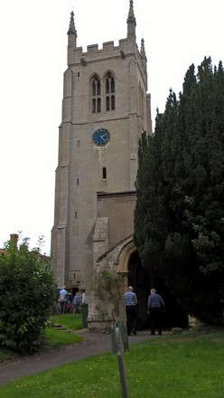
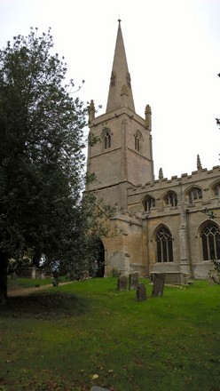
Horbling – St Andrew.
Sempringham – St Andrew.
Billingborough – St Andrew.
Lunch – The Bull at Rippingale which is highly recommended.
Rippingale – St Andrew.
Heydour – St Michael and all Angels.
Silk Willoughby – St Denys.
It was a very enjoyable day and thanks go to the Ingoldmells and Addlethorpe ringers who organised the tour.
Tess Rowland
Sat 10 Sep 16 - 6 Bell Striking Competition
The competition was held at Moulton for the Cup and Whaplode for the Plate.
Three teams entered the Plate competition. Ingoldmells, the Eastern Branch team were drawn last and consisted of Treble Helen Brotherton, 2 Clare Barker, 3 James Barker, 4 Isabel Barker, 5 Tony Barker, 6 William Brotherton. Bill called the changes – just over 240 of them.
There were six teams in the Cup competition with Kirton ringing for the Eastern Branch. They were drawn to ring last. It was a long wait at Whaplode for the Cup contestants to join us for tea – a substantial plated up tea of ham or quiche salad.
Then came the results with the Plate being presented first. The team that won was the Eastern Branch team, Ingoldmells, with 6 faults. Next came the Cup results with the Eastern Branch team, Kirton, winning. All the of the Kirton band had left so Helen Brotherton, Eastern Branch Secretary accepted the Cup on behalf of the Kirton team.
A very successful day for the Eastern Branch.
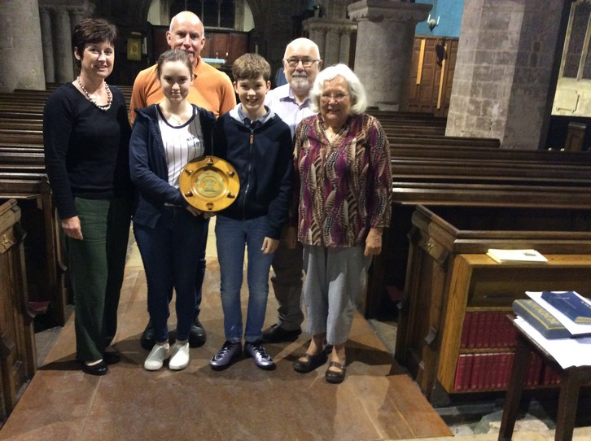
Helen Brotherton and image.
Sat 3 Sep 16 – EB Meeting Raithby and Old Bolingbrooke

We gathered on a rather rainy day at Raithby, the church tower was like a dungeon and the outside door could not be opened to let some daylight in. I rang the treble to plain bob and it needed pulling at both strokes to keep it up.
We then proceeded to Old Bolingbroke church where Gemma was a star finding the light switches for the ringers service conducted by Reverend Jean Coates. There were two readings read by Edward Vear and Gemma Evans.
After the service we took a short walk to the Black Horse pub where we met the three legged cat called Treble Bob. After a short wait in the bar we proceeded into the next room for a buffet tea of sandwiches and cake and then the meeting started.
Afterwards we walked back to the church to ring the bells entering the church through the rather high tower door. We rang plain bob, Cambridge, Stedman, London, Norwich, Single Oxford, spliced plain, little and St. Clements and other minor methods. A ringer from Norfolk heard the bells from his holiday caravan above the village and joined us, he knew some of the older ringers who made him very welcome.
James Barker
Eastern Branch and Elloe Deaneries Ringing at Lincoln Cathedral
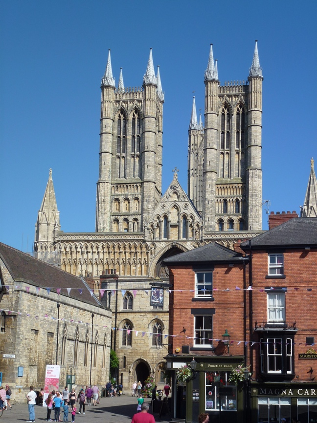
Sun 7 Aug 16 was the turn of the Eastern Branch and Elloe Deaneries to ring at Lincoln Cathedral for the Evensong service. The day dawned hot and sunny with a good cooling breeze. After meeting in the Ringers' Chapel at 2.15 pm some twenty seven ringers ascended the tower to the Ringing Room. Fourteen of these were Eastern Branch members; with two guest ringers from Nottingham the balance was made up of members from other branches and the Cathedral band. In the absence of Mick Smith and Jo French, Caitlin Meyer ably ran the ringing. All the ringing was on twelve bells. The ringing was enthusiastic with Rounds and Call Changes proving popular with the less experienced ringers. The seventh bell was not as favoured as the others. Situated in front of the open window the ringers of this bell had to cope with the stiff breeze blowing hair about as well as the rope! There were several courses of Plain Hunt Cinques as well as Little Bob Maximus. A plain course of Grandsire Cinques was the only piece that did not come round falling apart after six leads, however, a subsequent bob course was successful. The ringing finished with a good burst of Rounds.
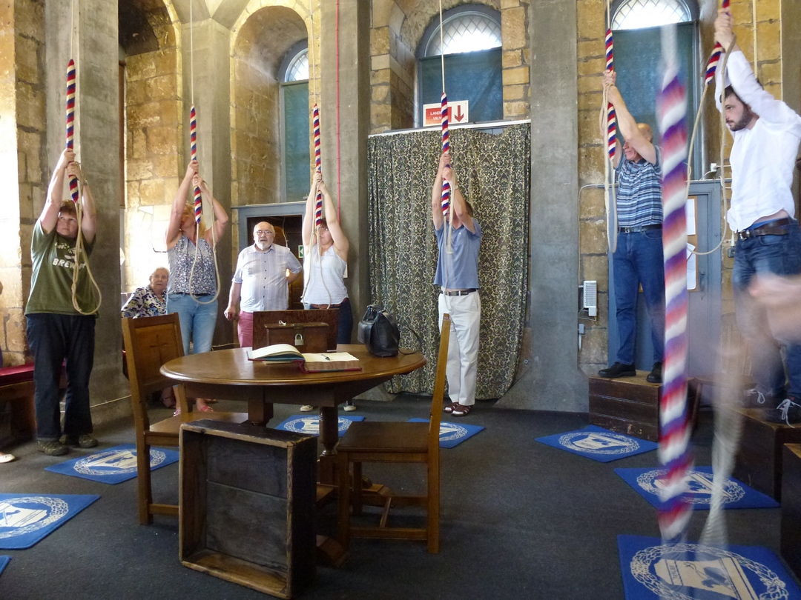
All of the ringing was presentable, although some of the pieces could have been quicker and sharper. The best ringing was the bob course of Grandsire Cinques and the Rounds at the end.
Many thanks to the Cathedral, Caitlin Meyer, the two non-ringing children who behaved impeccably and all the ringers who turned up to ring.
Helen Brotherton – images compliments of Val Wild
Young ringers day in Lincoln - Sat 23 Jul 16
We all congregated in the very sunny cloisters at Lincoln Cathedral to have our packed lunches and of course a pot of tea, this was when we got to see how many under 30s had attended from across Lincolnshire with the opportunity to see old friends and make new ones. We were then joined by Bishop of Lincoln Christopher who went around the group asking where we usually rung.
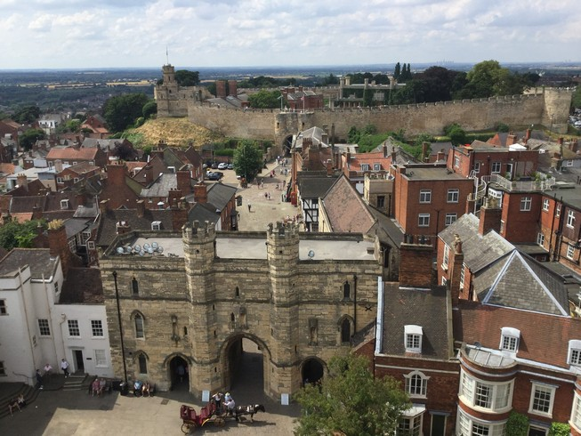
After we had lunch at around 1 pm we had a photo taken with the Bishop by the Guild Webmaster Jonathan, then headed to the Ringers Chapel, for those who haven't had the opportunity to enter this unique room, it is well worth a visit, it's the only Ringers Chapel in the world! Once in the Ringers Chapel we had a short talk about the Chapel and the Company of Bellringers from the Master Jeremy and a short talk from the Bishop. <\p>
There was around 30 under 30s, 5 of these from the Eastern Branch, that then climbed the Tower to ring on the 23cwt 12 of Lincoln Cathedral, with around 10 adult helpers. Once up the Tower Allister ran the ringing, 5 out of the 7 rings were rung entirely by the young ringers, many of whom had never rung on 12 bells before. The first ring was a placed band suggested by Sue and 3 of the Eastern Branch ringers featured in this band, myself on the treble, James on the third and Clare on the seventh. The next few rings enabled all the ringers to have a go, including one of Alford's newest ringers William. We rang for 35 minutes and after the ringing we were taken onto the balcony to see the view from The tower over Lincoln.
When we went down a wedding was just starting, so indirectly some of the less experienced members rang for their first wedding in quite a spectacular way. We then split up from here, with West Lindsey doing the next 3 towers as a group and the Eastern, Northern and Central doing the next 3 towers in a slightly different order, we had 30 minutes at each of the following towers:
Nettleham – 6- 8 cwt - Welton – 6 -10 cwt - Dunholme – 6 – 8 cwt
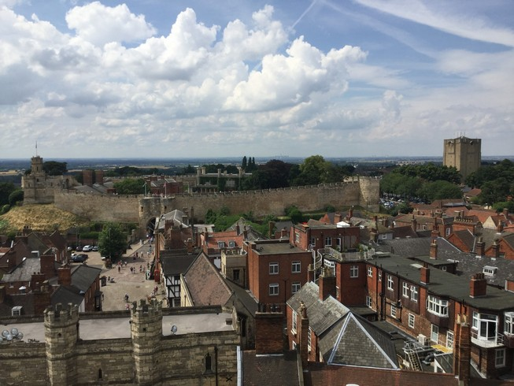
When we arrived at Nettleham we had lost a member of the Eastern Branch from Butterwick along with a few other ringers who had come for the grab of the Cathedral, ringing at Nettleham was run by myself assisted by Clare Barker. We rang several times, including rounds and call changes, rounds for our less experienced ringers and finished with some plain hunt on 5. Next was Welton, this time ringing was run by Hannah Watts from the Central Branch, again we rang rounds, rounds and call changes and plain hunt on 5, we also had a go at plain hunt on 6. The final tower was Dunholme, ringing here was run by Luke Boreham, out of the three towers these were the easiest going, we rang rounds, rounds and call changes, plain hunt on 5 and some plain Bob doubles. Due to the lack of the take up of the adult mini tour linked to the young ringers day we had a good number of adults with us making it even more of a fun day out.
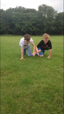
Ringing finished for the day we retired to Dunholme village hall for dinner. Which turned out to be burgers and sausages in buns for main and cake for pudding and of course the obligatory cup of tea or squash. The Lincoln ringers really did an excellent job with dinner. Sue Faull was thanked for organising the day and then we headed out onto the field for the "mini olympics".
This was a fun end to the day, there were 3 teams, Central, West Lindsey and Eastern combined with the Northern. We started off with a sack race; somehow I ended up having to go twice; I'm really bad at this event but it was really funny, next was a dribbling race which we WON! Then followed the Frisbee event we didn't win! We did win the adult version though.... Then was welly wanging we did well on that, next followed skipping and three legged race. These we were really funny James and William turned it into a three legged crawling race, and we aren't very good skippers. After the mini olympics we had a medal ceremony.
1 - West Lindsey 2 - Central 3 - Eastern with the Northern
To end the day we got back into the groups we rang in plus adults and played a game of rounders. We batted first and set an impressive 10 rounders to beat, then we fielded, me on first base, William on bowl and James and Clare were fielding. We managed to hold out a WIN as the West Lindsey ringers only managed a slightly less impressive 91/2 rounders.
We then prepared to take our different journeys back home. The young ringers from the Eastern Branch were William of Alford, James of Ingoldmells, Clare of Ingoldmells and Gemma of Alford.
I hope that this is repeated again in 2017 and more people take the amazing opportunity of ringing in a different setting and making new and restoring old friendships.
Gemma Evans and images
RW National Youth Striking Competition - Sat 2 Jul 16
On Saturday the 2nd of July, 2016, I travelled by train with my family and fellow teammates to London to compete in the Ringing World National Youth Striking Competition. I was a part of the Lincolnshire Gamekeepers, one of the two Lincolnshire teams in the competition and so we (me and my brother James along with our family) began our day bright and early at 4:30 so we had time to drive to Peterborough and catch a train to Kings Cross. Upon arriving we caught up with fellow Lincolnshire poacher teammates and walked to the tube station to arrive in time for sign in at St Mary le Bow. Once we arrived we were directed into the main church to reconvene with our group and collect wristbands. Our team was comprised of me, my brother James, Archie Stanley, Tom Thorpe, Bethan Stanley, Stephanie Henshaw, Adam Muspratt and Will Gray. We had the opportunity to ring at Bow which was particularly special as they are one of the most famous rings of bells in London. Our ring consisted of some rounds and called changes for everyone in various teams to have a go at ringing the bells. After Bow we walked to St Dunstan in the West to perform our test piece. I am proud of our team and our piece was a very good effort by all.
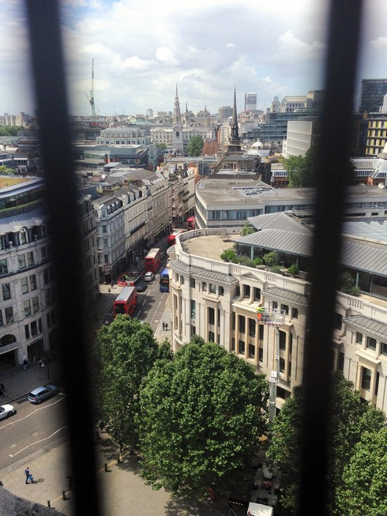
After completing our piece, we walked with Tom, Adam and Will and their supporters to St Martin in the Fields, a beautiful ring of twelve. Much to my surprise, the bells felt a lot lighter than they actually were and I easily managed to ring the 10th! We were met by a familiar face, Ben Meyer, formally of Alford who is tower captain there. These were by far the best bells of the day in my opinion! Next it was time for the St Paul’s belfry tour which was attended by me and James along with three fellow teammates, Stephanie (with her brother Miles), Archie and Bethan. We were merged into one large group with members of fellow teams, St Martin’s Youth (Birmingham) and the Three Spires (Lichfield and Walsall) to have a guided tour of the belfry and ringing room. After many long ‘Harry Potter’ like passages and even seeing the actual Harry Potter staircase that they used for filming, we made our way to the massive ringing room and then up to the bells and the incredible views of London.
We then returned to Bow to get the results of our test piece, unfortunatley we did not make it into the finals. After eating a meal deal lunch outside the church we headed out to St James Garlickhythe (the Queen’s belfry barge bells) for a ring with the Lincolnshire Poachers, as we had arrived later than the rest of our Gamekeeper teammates. When leaving the church we hit a spot of trouble on the underground as a section of the Hammersmith and City line was closed off, directly where we wanted to go! After some rather unusual navigation by Bridget (from the Poachers) we managed to reach our next tower, St Botolph’s Bishopgate where the bells were a little more challenging but still a nice ring. Next it was on to Christ Church, Spitalfields where we rang some nice called changes on nice bells. Lastly it was a sprint down multiple, busy London roads to the last tower of the day, St Magnus the Martyr. The magnificent 12 were nice to ring and we certainly enjoyed them. We then made our way back to Bow for the results and the presentation of medals. Outstanding in this was the way that Bridget received the results for the poachers as she stood up with a shriek! Overall the Lincolnshire Gamekeepers acheived a high B grade and the Lincolnshire Poachers an A grade.
To finish the day we headed back to Kings Cross to hop on the train back home after a very long but enjoyable day for all!
Clare Barker – images compliments of Tony Barker
Summer Barbecue at Sibsey Mill
On Saturday 2nd July the Lincoln Guild Eastern Branch held its summer barbecue at Sibsey Trader Mill. Ringing was at Old Leake – not the most popular tower. The six bells, with a long draft, handle well but are difficult to hear inside and sound clunky outside. Only nine ringers and a visitor turned up. William Young, a retired Old Leake ringer, arrived with his wife who provided us with a very welcome cup of tea. Rounds and Call Changes, Grandsire Doubles and Plain Bob Minor were rung before we made our way to the Mill where Ian Ansell was our usual congenial host.
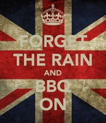
As we arrived it started to rain and we all congregated in the marquee. The rain turned into a deluge and with the rain drumming on the roof all the marquee flaps were closed. We entertained ourselves with a two page quiz set by the Evans family. Phil Ford won the quiz with 72 correct answers. Meanwhile, Richard and his cohorts manfully cooked the sausages, hamburgers and onions with Edward holding a large table umbrella to protect them from the downpour. The rain conveniently stopped just as the food was ready and we all trooped out to fill our plates. Back in the tent we all tucked in. There was a lot of food to get through. The raffle was drawn with loads of prizes.
As it got dark some of us went into the Mill to buy goods, help clear away and we began to make our way home having eaten well and enjoyed the evening.
Sixty seven people were catered for and £482.50 was raised for the BRF.
Our thanks go to Richard and his family for all their hard work, to Ian for hosting the event, to the Evans family for providing the quiz, to Val and Annette for taking the ticket money and providing the tea and coffee and to all the people who brought the delicious salads and puddings.
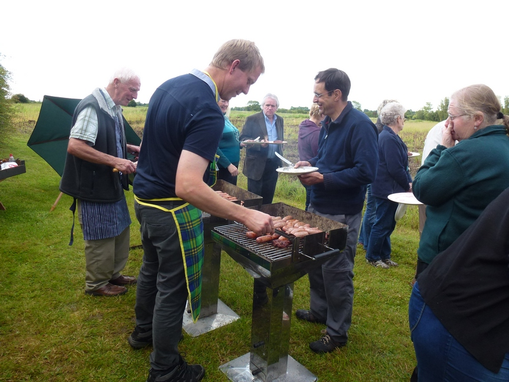
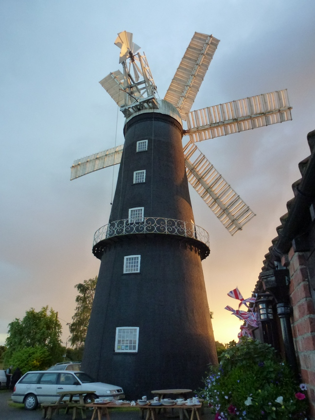
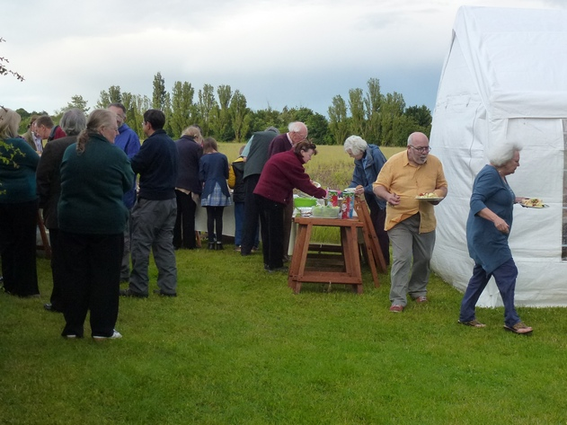
Helen Brotherton
Eastern Branch 6 Bell Striking Competition
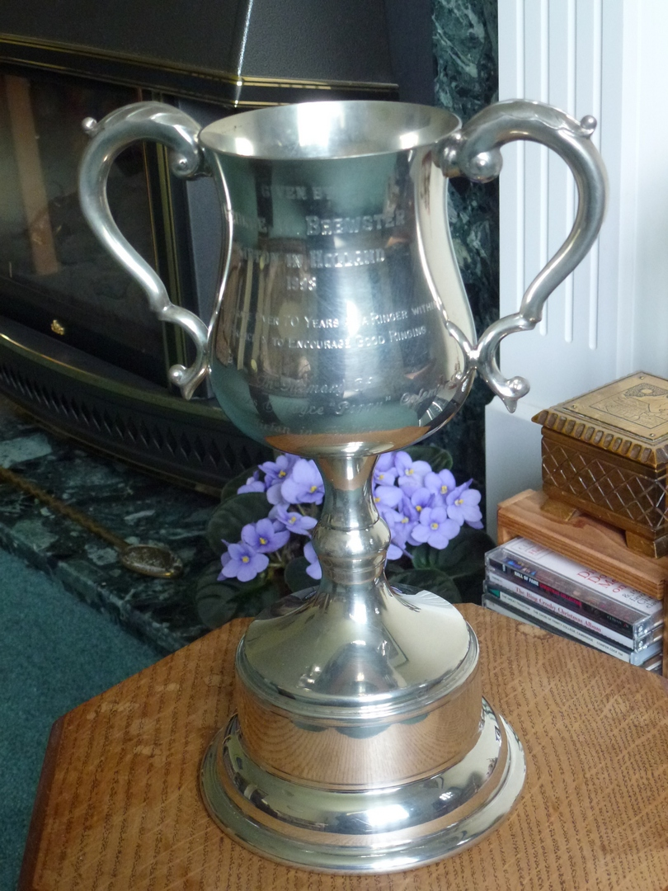
On Saturday 4 June 2016 members of the Eastern Branch met at St Helena’s at Willoughby to compete in the Eastern Branch 6 Bell Striking Competition for the award of the George Brewster Cup. Five towers entered, with 2 scratch teams being formed. Teams were entered alphabetically and the results were:
ALFORD: 5th place with 61 ½ faults – 9 min 36 sec: Comments: Test piece was good, there was clipping and changes in speed. The rounds were good.
BOSTON: 3rd place with 21 faults – 8 min 25 sec: Comments: Test piece was a very good start, steady ringing very few faults but a pile up, fast leading. But on the whole good ringing.
CONINGSBY: 4th place with 55 ½ faults – 9 min 45 sec: Comments: Struggled with test piece due to a ‘box issue’, steady start with a good beat, leading faults clipping the back bells and changes were not always clean.
INGOLDMELLS: 2nd place with 7 ½ faults – 8 min 42 sec: Comments: Test piece was quick, good rounds with a steady start, good to listen to with tenor mentioned for good ringing.
KIRTON: 1st place with 6 faults – 9 min 1 sec: Comments: Good, steady test piece, pleasure to listen to with a good speed throughout. Tenor ringer mentioned for good ringing.
YOUTH SCRATCH TEAM: 53 faults – 8 min 39 sec: Struggled to settle but a very good effort. Most faults were little errors and the backward rounds were excellent.
- Clare Barker
- James Barker
- Luke Busby-Smith
- Bryony Curley
- Gemma Evans
- Tom Evans
ADULTS SCRATCH TEAM: 36 ½ faults – 8 min 54 sec: Differing speed and struggled with rhythm, but there were long stretches of good ringing. Finished 6 blows too early.
The Competition was ably judged by Tom Blyth (who had to be thawed out when he came into the Church). He commented that on the whole the ringing was very good, with good efforts by all teams, there were no major problems, with no big pile ups and on the whole the majority of faults were clips. He was thanked for his efforts by everyone and presented with a bottle of wine.
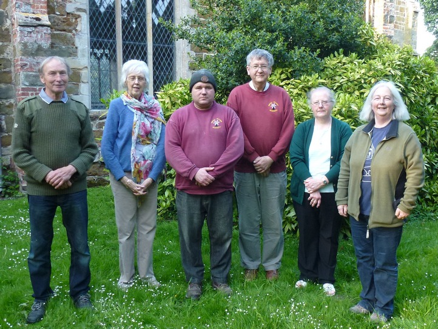
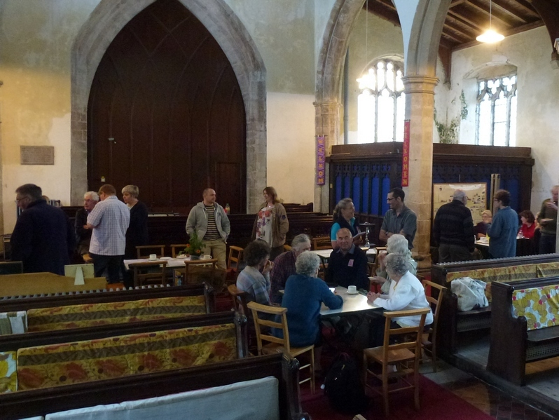
A quiz was held, thanks for the compilation going to Ian Evans, which raised £18 towards the Eastern Branch Bell Repair Fund and was won by Sam Napper. Thanks were given to Gemma Evans and her friends who provided drinks and a fabulous collection of cakes. BBQ tickets were on sale and a request was made for ringers wishing to attend the Cathedral ringing on Sun 7 Aug 16 to let Helen Brotherton know as numbers and names were required.
Tess Rowland - images compliments of Val Wild
Archdeacon's Visitation Service, Freiston 18 May 16
The bells of St James, Freiston were rung prior to the Archdeacon’s Visitation service on Wednesday 18th May 2016, 720 Doubles, 3 extents each of Grandsire and Plain Bob, as follows:
- Valerie S Wild
- Helen M Brotherton
- Jo French
- Bill Brotherton
- Greg Harrison (C)
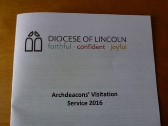
The office of Churchwarden is an ancient one, whose rights and responsibilities have been modified by statute. Churchwardens are not only the elected representatives of the laity of the parish, but also officers of the Bishop. They are admitted to office by the Archdeacon on behalf of the Bishop at the Archdeacon’s Visitation, that was why we were all there, as churchwardens and their supporters. There were a good sprinkling of ringers present at the service from Elloe Deaneries and Eastern Branch.
Val Wild
Benington and Freiston EB Meeting
Saturday May 7th was the day for the Eastern branch practice and meeting at Benington and Freiston. About 25 ringers rang at each tower.
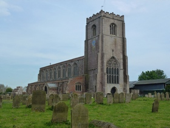
The afternoon started at Benington with a rare opportunity to ring the bells at All Saints. The Benington Community Heritage trust has been awarded a £1.8m Heritage Lottery Fund grant to restore and reopen the church as a community, events and heritage centre- hopefully the bells will still be ringable once the project is complete. The key holder was pleased to welcome us and said that hearing the bells had ‘made his spring!’
We then moved on to Freiston for a service conducted by Rev Andrew Higginson and Eastern Branch’s resident organist, Louis played the organ. Thanks go to Jo and Simon’s ‘sister’ (mum) and Freiston churchwarden Yvonne for an excellent bellringers’ tea. The meeting was followed by ringing (thanks Tony and Greg for adjusting the ropes!) until about 8.30pm.
Jo French - image compliments of Val Wild
EB Branch Learners Workshop at Friskney All Saints
On 16 April, a Saturday that started with snow, which then proceeded to sleet and then rain with the odd spell of sunshine, approximately 30 ringers arrived at Friskney All Saints Church, after encounters with stray cows, Boston snarl ups and the worst sunken and potholed drain road in the whole of Lincolnshire. But not even the weather or travel adversities dampened the spirits of those in attendance and the bells rang out from the normally silent tower of All Saints Church.

The workshop was mainly held to help learners gain experience and confidence, with the more experienced ringers on hand to offer advice and encouragement. Rounds and call-changes were rung with some plain hunt on 5. A few courses of Plain Bob Doubles and Minor were also rung to give intermediate ringers the opportunity to ring with experienced ringers, with the emphasis being placed on good striking.
Beverages and excellent cakes were provided by Isabel Barker and Helen Brotherton and even the Eastern Branch osprey (seldom seen and just hovering) AKA as Simon, was seen with cake in hand. At the end of the workshop thanks were given to all who had helped in the ringing chamber, Isabel and Helen for their catering and the Barker family for hosting the event. Ringers then left the Church and were pebbled dashed by gale-force winds slinging hail stones at them!
Tess Rowland - Images compliments of Val Wild
Eastern and Northern Branches Practice

On Saturday 2 Apr 16, Eastern and Northern Branch members were joined by members from the Central Branch for an afternoon and evening of ringing within the Eastern Branch. It was an exceptionally good turn out with an average of approximately 25 ringers at each tower. Everyone agreed that it was a very enjoyable day. All levels of ringing were covered; learner, intermediate and experienced. The following towers were visited:
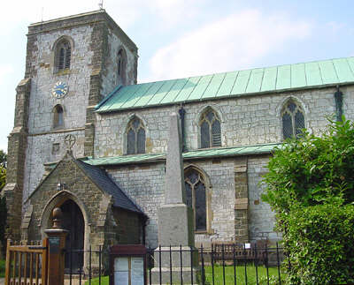
Great Carlton – St John the Baptist (5)
Legbourne – All Saints (5)
Louth – St James (8)
Spilsby – St James (6)
Thank you to all the relevant Tower Captains, Ringing Masters Andrew Lloyd and Mick Smith who made it such an enjoyable tour and Phil Ford who supplied refreshments at Spilsby. It is hoped that this event will be repeated in 2017.
Anne Hardwick - images from LDGCB website
Boston Stump Practice
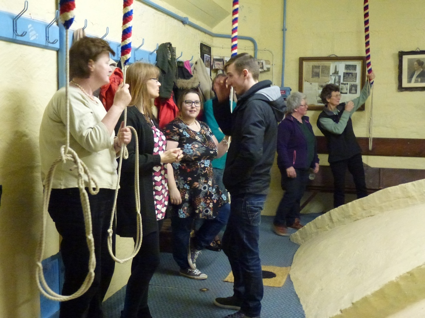
Saturday 5th March was the Eastern Branch’s practice at Boston Stump. It was a sunny and showery day when several ringers met in the church café to enjoy some refreshments before the long climb to the Ringing Room. The easiest way to climb the steps, according to Ringing Master Mick Smith, was to climb slowly and steadily without stopping. Easier said than done! When everybody eventually arrived in the Ringing Room Mick called for rounds and call changes. The bells had been set at backstroke giving the first ringers a good indication as to whether they needed a box. The 10 bells are light-ish with a pleasant sound and quite easy to ring once you get the feel of them. Ropesight is not easy in what is essentially a square “circle”! The vaulted church ceiling rising in the centre of the Ringing Room is distinctive and unusual.
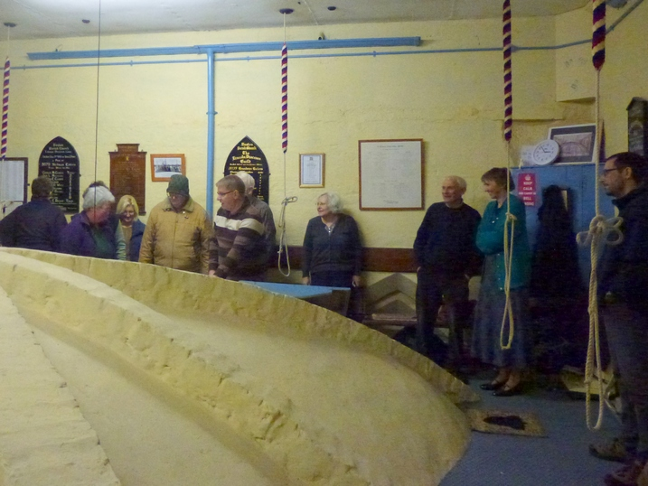
Twenty-five to thirty ringers were there and comfortably accommodated. There were several calls for Rounds and Call Changes and quite few were ringing these on 10 for the first time. Also Plain Hunt on 9 was a first for some of the ringers. The more experienced rang Plain Bob Royal, Grandsire and Stedman Caters. With Boston Stump being the only 10-bell tower in the Eastern Branch it was a pleasant change from the usual 8 and 6 bells we normally ring.
The view from the trap door looking down to the ground below is scary and never fails to impress. We all had a good time and it was an enjoyable and pleasant experience for everyone. We were all in a good mood managing to get down the tower steps just before closing time. Many thanks to Mick Smith for arranging and running the ringing.
Helen Brotherton - Images Val Wild
Coffee Morning for Sutterton Bells
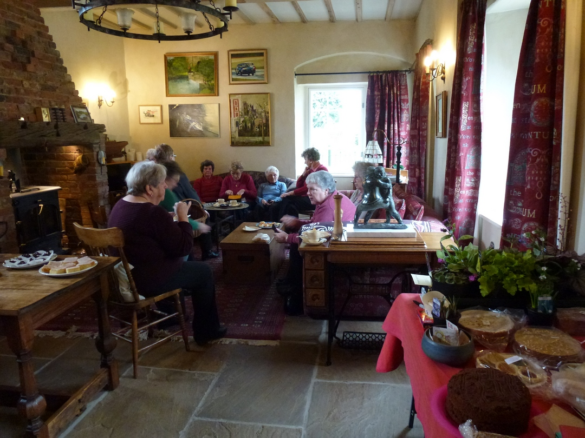
On Saturday 20th February 2016, Penny and Roger Fountain held a coffee morning at their home, in aid of the bells at Sutterton. The frame is in need of repair and the bells are unringable at present. In addition to hot drinks, there were many biscuits and cakes, also for sale plants and more cakes, and of course a raffle. Including donations over £450 was raised – a fantastic result. A very enjoyable morning for a worth while cause.
Write up and images Val Wild
Eastern Branch - AGM 30 Jan 16
There was a sunny but chilly late morning start to the Eastern Branch AGM at St Mary's, Horncastle . Around 45 ringers of all abilities were up in the ringing chamber. Through the morning the ringers performed a variety of things from rounds and call changes, and methods which varied from Grandsire Doubles to Cambridge Surprise Minor.
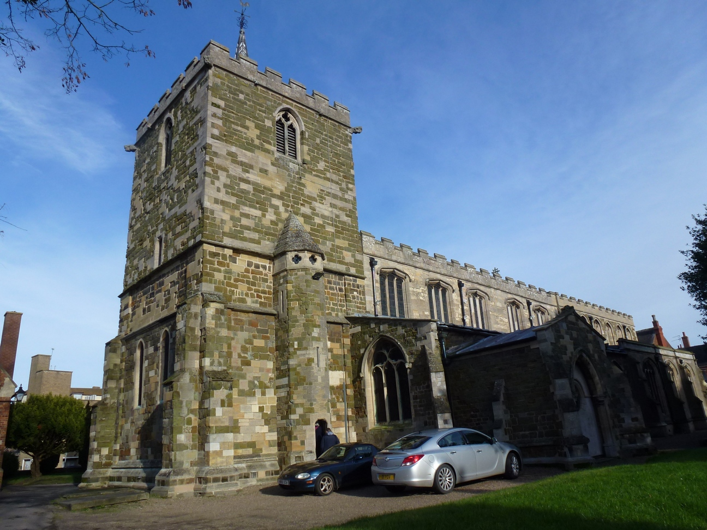
At 12 we all went down into the Church where the Vicar took the Service based around the presentation of Christ in the Temple, Edward Vear did the reading and the organ was played for the hymns. Then the people who had booked in for lunch at the Bull, took a gentle walk from the Church to the pub. We had booked the restaurant out; the meal was lovely. We had the choice between pie or sausage and mash for the main and apple crumble or chocolate fudge cake for pudding. The AGM then followed in the function room and was well attended and informative, with 6 new members elected. Unfortunately somebody forgot to collect their raffle prize!.
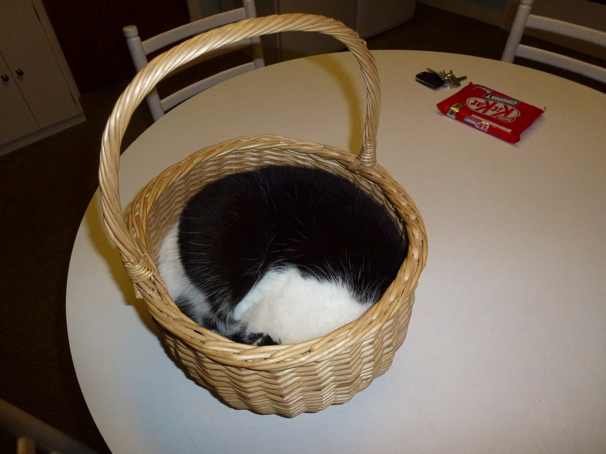
There was then a leisurely stroll back to the tower, this was less attended than the morning with around 25 people attending, and the ringing was again varied included some rounds, Plain Bob Minor, Single Oxford, London Surprise Minor, Stedman and some Spliced Minor.
Overall it was a good turn out for the Service, AGM and Practices.
Gemma Evans - Images compliments of Val Wild